艦これ 2015 秋イベント E-1 ショートランド泊地沖
公開日：
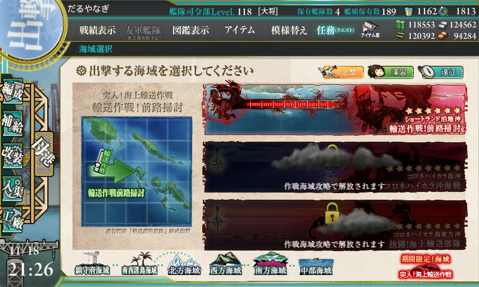
ボスにたどり着くお仕事。
難易度
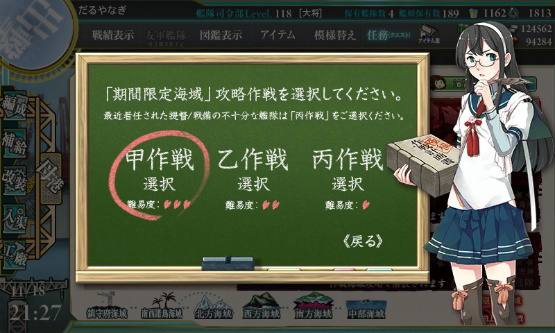
難易度は甲。報酬しょぼかったし、レベル下げてもよかったかもな（「熟練見張り員」がもらえるかどうかでレベルきめてもいいかも）。
編成
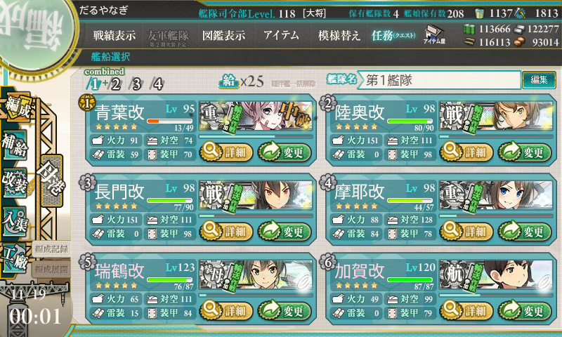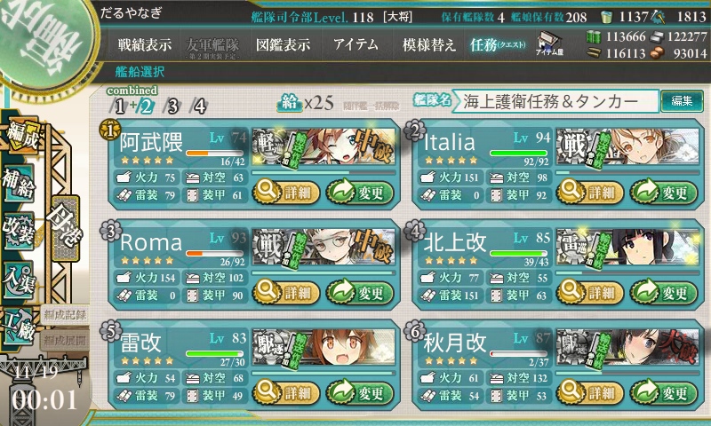
なんとなく【機動部隊】を選択。これがちょっとミスだったかもしれないが、序盤は調子よくボスに到達していたので気にならなかった。ラストアタックで3連続で事故ってちょっと後悔する。
3戦編成
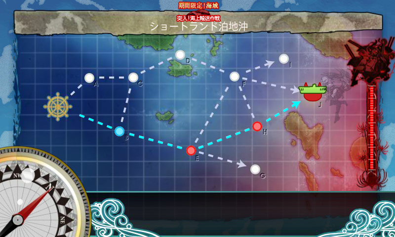
B で能動分岐。H で右方向の索敵エフェクト。
- 第一艦隊
- 青葉
- Italia
- Roma
- 摩耶
- 瑞鶴改二甲
- 加賀
- 第二艦隊
- 阿武隈（改。育成中）
- 那智
- 羽黒
- 秋月
- 雷
- 電 → 北上
これで3戦ルートらしい。
4戦編成
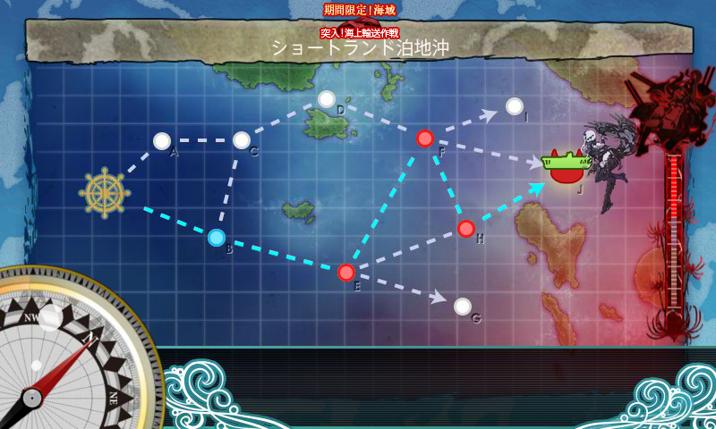
E で上方向の索敵エフェクト。
- 第一艦隊
- 青葉
- 長門
- 陸奥
- 摩耶
- 瑞鶴改二甲
- 加賀
- 第二艦隊
- 阿武隈（改。育成中）
- Italia → 大井
- Roma → 木曾
- 北上
- 秋月
- 雷
戦艦3隻以上は4戦になっちゃうみたい？ あと、第二艦隊から戦艦を抜いて雷巡を3隻にしても4戦ルートだった。雷巡が多すぎてもあかんのかな。
想像だけど、【水上部隊】なら初手は A なんだろうな。そのまま上ルートに行けるなら、E の戦艦よりも F の空母の方がマシなので、機動部隊】よりも【水上部隊】がよさげ。
出撃
- B → E → H → J：3戦編成、ボス撃破
- B → E → H：大破撤退
- B → E → F → H → J：4戦編成、ボス撃破
- B → E → F → H → J：4戦編成、ボス撃破
- B → E → H：3戦編成、大破撤退
- B → E → H：大破撤退
- B → E → F → H → J：4戦編成、ボス撃破
- B → E：3戦編成、大破撤退
- B → E：3戦編成、大破撤退
- B → E → H：3戦編成、大破撤退
- B → E → F → H：4戦編成、大破撤退
- B → E → F → H → J：4戦編成、ボス撃破
12回出撃、5回ボス撃破。ドロップは目ぼしいものなし。
無理に3戦編成にすると、敵をうち漏らして反撃を食らうパターンが多かった。4戦編成の方が火力がある分安定する（ただし、資源消費は多い）。ちょっと手際が悪かったけど、まぁ、仕方なし。
報酬
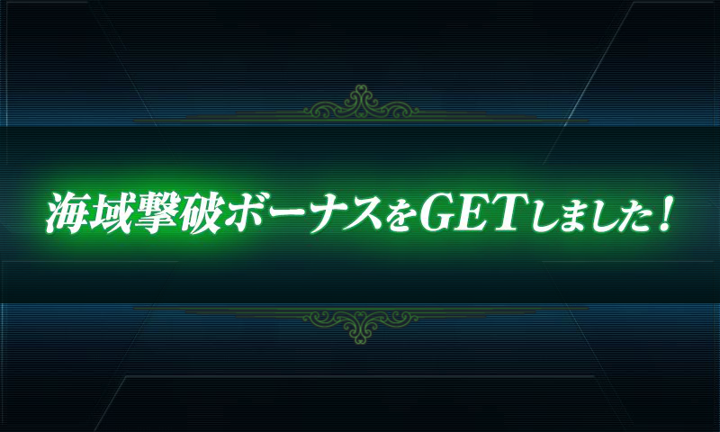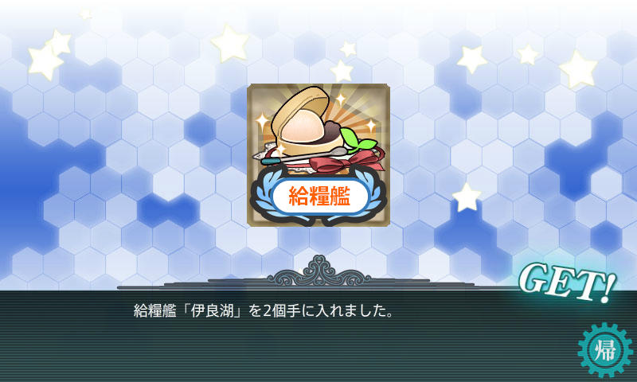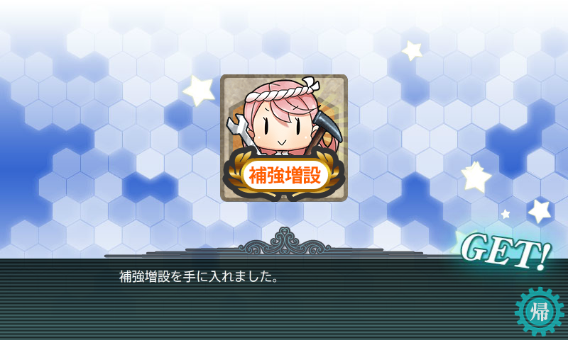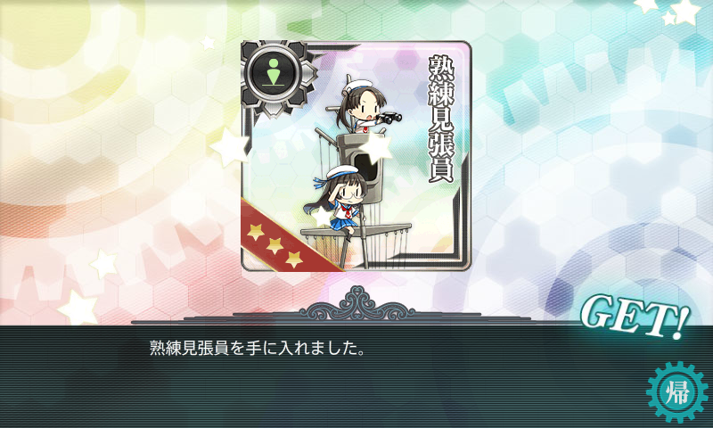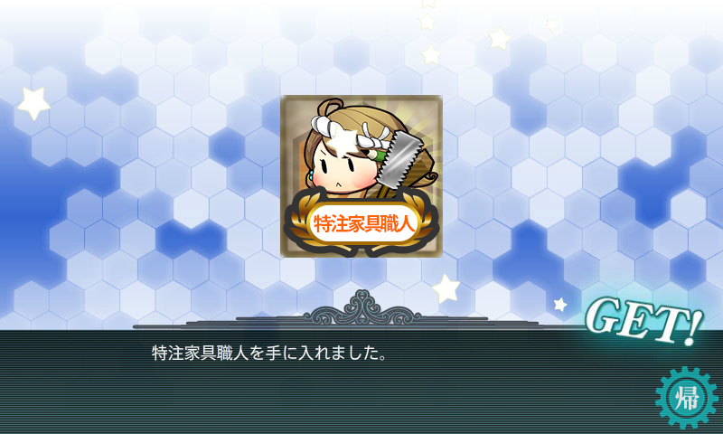